AI + 人协同 SOP
新人 AI 工作 SOP：网站部署上线
面向使用 AI 但不懂代码的新手。你负责点击操作，AI 负责技术判断。遇到任何困难，把信息发给 AI 让它帮你。
版本 v3.0
更新 2026-07-14
适用 零基础新手
方式 你点 + AI 帮
一、这个 SOP 是给谁用的
当你已经有一个网站项目，代码已经上传到 GitHub 后，可以用这个 SOP 完成上线。
适合的场景
- 纯展示类网站（官网、活动页、个人主页）
- 带搜索、登录等交互功能的网站
- 工具页、落地页上线
你需要准备的账号
| 账号 | 干什么用的 | 是否必须 |
|---|
| GitHub 账号 | 存放你的网站代码 | 必须 |
| Cloudflare 账号 | 放你的网站，让用户能访问 | 必须 |
| Railway 账号 | 放你的后端程序（只有网站有搜索/登录等功能时才需要） | 有后端时必须 |
| 代理工具（翻墙软件） | 注册和配置海外平台时需要 | 必须（见第二章） |
| AI 工具（如 TRAE） | 遇到任何困难随时问 AI | 强烈建议 |
核心理念：你不需要懂代码。你只需要做两件事：跟着步骤点击操作，以及遇到不确定的地方把信息发给 AI 让它帮你判断。
什么是"前端"和"后端"？：简单理解——用户能看到和点击的页面叫"前端"，在背后处理数据、搜索、保存信息的程序叫"后端"。如果你的网站只有展示页面没有交互功能，那就只有前端，不需要后端。
二、网络环境说明（重要）
这是新手最容易忽略的一步：不同平台在国内的访问情况不同。不提前了解，会导致"明明操作对了但就是打不开"。
各平台在国内能不能打开？
| 平台 | 国内状态 | 用来干什么 |
|---|
| Cloudflare Pages | 能直接打开 | 放你的网站 |
| DeepSeek | 能直接打开 | AI 服务（如果你的网站用到了） |
| GitHub | 时好时坏 | 存代码 |
| Cloudflare 操作后台 | 建议开代理 | 配置网站部署 |
| Railway | 打不开 | 放后端程序 |
| Vercel | 打不开 | 不要用这个 |
什么时候要开代理，什么时候不用？
| 你在做什么 | 要开代理吗？ | 说明 |
|---|
| 注册 GitHub / Cloudflare / Railway 账号 | 要开 | 注册时可能需要验证，不开代理可能卡住 |
| 在 Cloudflare 后台操作 | 建议开 | 开了更稳定，不容易加载失败 |
| 上传代码到 GitHub | 看情况 | 有时候能传成功，传不上去就开代理 |
| 别人访问你的网站 | 不用开 | 网站放在 Cloudflare 上，国内直接能打开 |
记住这句话：你在配置和部署的时候需要开代理，但你的用户访问网站时不需要开代理。
上传代码到 GitHub 总是失败？
如果你在上传代码到 GitHub 时经常失败，可能是网络问题。不要自己折腾网络设置，直接问 AI：
发给 AI 的提示词
我在上传代码到 GitHub 时总是失败，提示连接超时。
我的电脑用的是 Windows 系统，代理软件是【填你的代理软件名称，比如 Clash / V2Ray 等】。
请帮我：
1. 判断是不是代理没配置好
2. 如果需要配置，请告诉我具体怎么操作（一步一步来）
3. 配置好了之后怎么测试是否成功
三、部署前准备
在开始部署前，确认以下内容：
- 已注册并登录 Cloudflare 账号（注册时需要开代理）
- 已有 GitHub 账号，网站代码已经上传到 GitHub 仓库
- 如果你的网站有搜索、登录等交互功能，还需要准备好后端代码的 GitHub 仓库
部署时需要填一些配置信息，但你不需要自己判断怎么填：Cloudflare 会问你一些问题（比如"你的项目用什么技术""构建命令是什么"），这些你不需要懂。把你的 GitHub 仓库地址发给 AI，AI 会告诉你每个空填什么。
发给 AI 的提示词
我要把网站部署到 Cloudflare Pages，这是我的 GitHub 仓库地址：【填你的仓库地址】
请你帮我看看：
1. 这个网站是什么类型的？
2. Cloudflare 会问我的"构建命令"应该填什么？
3. "输出目录"应该填什么？
4. 有没有需要提前准备的东西？
请用大白话告诉我，我完全不懂代码。
四、前端部署到 Cloudflare Pages
这是核心步骤。Cloudflare Pages 是一个免费的网站托管平台，放在上面的网站国内用户可以直接访问。
1
进入 Cloudflare 后台
打开 https://dash.cloudflare.com/（建议开代理），登录后进入控制台首页。
2
找到 Workers & Pages
在左侧菜单栏找到 Workers & Pages，点击进入。
如果左侧菜单很多，在 Build / Compute 分类下找。
Workers & Pages 是什么：就是 Cloudflare 里"管理网站"的页面。进去之后可以创建新的网站项目。
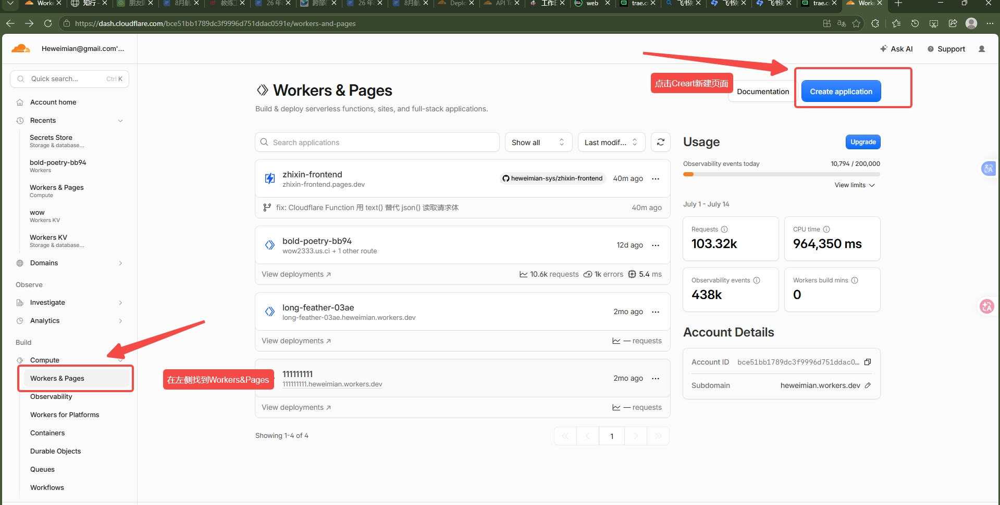
↑ 在左侧找到 Workers & Pages，然后点右上角蓝色按钮 Create application
3
创建新应用
点击右上角蓝色按钮 Create application。
中文理解：就是"创建新项目"的意思。
4
选择部署 Pages（不要选 Worker！）
默认显示 Create a Worker。不要点这个！我们是部署网站页面，需要选 Pages。
在页面下方找到 "Looking to deploy Pages? Get started"，点击 Get started。
Worker 和 Pages 的区别（简单理解）：Worker 是用来处理后端逻辑的，Pages 是用来放网站页面的。我们要上线网站，所以选 Pages。选错了也没关系，退回去重新选就好。
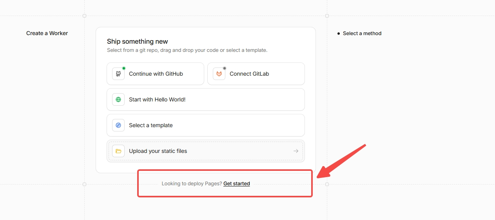
↑ 不要选 Create a Worker，在页面底部找到 "Looking to deploy Pages? Get started" 点这个
5
选择从 GitHub 导入
选择 Import an existing Git repository，点击 Get started。
中文理解：从 GitHub 上已有的代码仓库导入。这样以后你更新了 GitHub 上的代码，Cloudflare 会自动帮你重新部署。
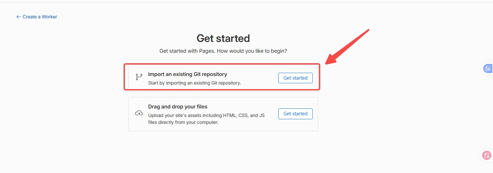
↑ 选第一个 "Import an existing Git repository"，然后点 Get started
6
选择 GitHub 仓库
确认 GitHub 账号是否正确 → 在 Select a repository 区域选择你的网站仓库。
仓库太多可以在搜索框输入名称搜索。
7
如果找不到仓库怎么办？
页面底部会提示 "configure repository access for the Cloudflare Pages app on GitHub"，点击 Cloudflare Pages 链接：
- 进入 GitHub 授权设置页面
- 选择允许 Cloudflare Pages 访问的仓库
- 勾选目标仓库 → 保存
- 回到 Cloudflare 页面刷新，重新搜索
为什么找不到仓库？：因为 Cloudflare 还没有获得你 GitHub 仓库的访问权限。点授权链接给它权限就好了。
8
填写配置信息（不知道怎么填就问 AI）
选择仓库后会进入配置页面，需要填写几个信息。这里有英文术语，你不需要自己判断怎么填。
不要自己瞎填！：把你 GitHub 仓库地址发给 AI，AI 会告诉你每个空填什么。填错了会导致部署失败。
发给 AI 的提示词
我正在 Cloudflare Pages 上部署网站，现在需要填写配置信息。
我的 GitHub 仓库是：【填你的仓库地址】
请告诉我：
1. "Project name"（项目名称）填什么？
2. "Production branch"（生产分支）填什么？
3. "Build command"（构建命令）填什么？
4. "Build output directory"（输出目录）填什么？
5. "Environment variables"（环境变量）需要填吗？填什么？
请一个一个告诉我，用大白话说。
AI 告诉你每个空填什么后，照着填就行。
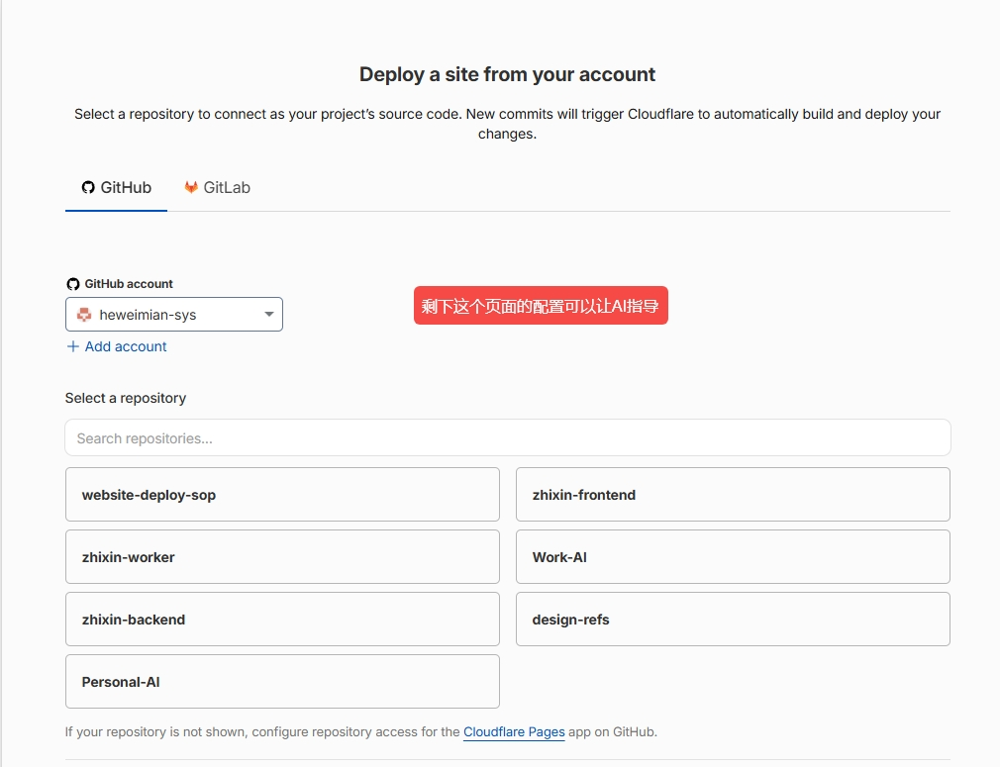
↑ 选择你的仓库后，剩下的配置不知道怎么填就把仓库地址发给 AI 让它告诉你
9
点击部署
配置完成后，点击页面底部的 Save and Deploy 按钮。
中文理解：保存并开始部署。Cloudflare 会开始自动构建你的网站。
10
等待部署完成
部署过程中会显示构建过程（一堆英文日志，看不懂没关系）。
如果部署成功，会出现成功页面，显示：
Success! Your project is deployed to Region: Earth
并展示一个网址，例如 website-deploy-sop.pages.dev。
如果部署失败了：不要慌，也不要反复点击重新部署。把构建日志里红色的报错信息复制发给 AI，让 AI 帮你找原因。
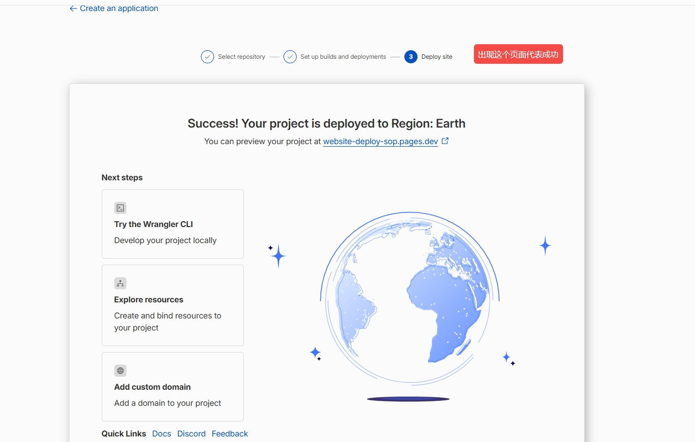
↑ 看到这个页面就代表部署成功了！出现这个地球图和网址就对了
11
找到正式网站地址
在项目详情页 Deployments → Production 区域，可以看到你的网站地址：
https://你的项目名.pages.dev
这个地址就是正式访问地址，可以分享给任何人。
两种地址的区别：正式地址 xxx.pages.dev 是对外分享用的；还有一种带随机前缀的地址（比如 4601e4a2.xxx.pages.dev）是某次部署的预览链接，一般不用管。对外分享用正式地址。
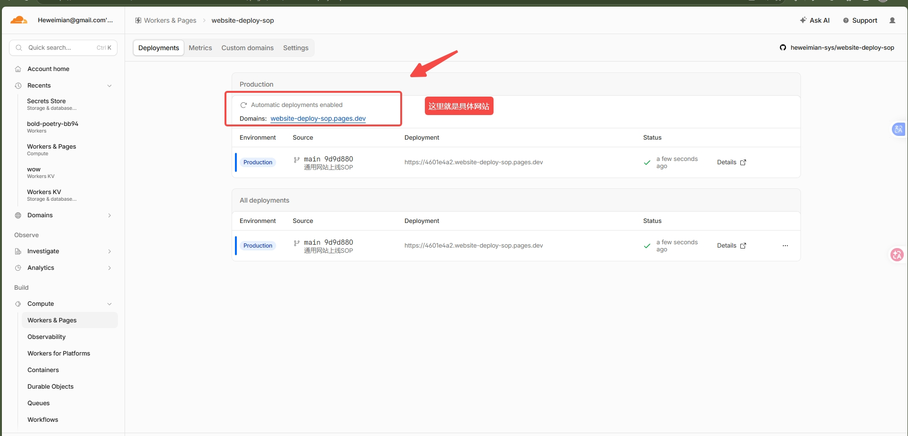
↑ 在 Deployments 页面找到 Production 区域，这里显示的就是你的正式网站地址
五、后端部署到 Railway
什么时候需要这一步？：如果你的网站只有展示页面（没有搜索、登录、数据交互等功能），可以跳过这一章。只有需要后端功能时才需要。
Railway 是一个免费的后端托管平台（每月有 $5 免费额度）。你可以理解为：Cloudflare Pages 是放前端网页的，Railway 是放后端程序的。
重要提醒：Railway 在国内打不开（被墙了）。但这不影响使用——我们会在第六章用 Cloudflare 做一个"中转"，让国内用户也能访问到后端。你现在只需要开着代理完成部署配置就行。
1
注册 Railway 账号（需要开代理）
打开 https://railway.app
点击右上角 Login 按钮
选择 Login with GitHub
中文理解：用 GitHub 账号直接登录，不需要单独注册
首次登录会弹出 GitHub 授权页面，点击 Authorize Railway 同意授权
授权后自动进入 Railway 控制台首页
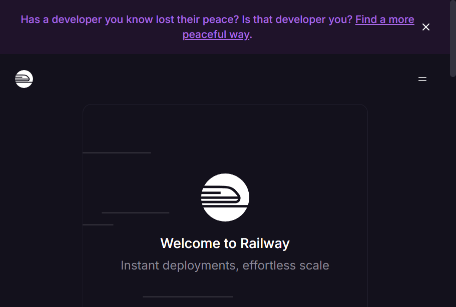
↑ 打开 railway.com/login，点 "Continue with GitHub" 用 GitHub 账号登录
2
创建新项目
在 Railway 控制台首页，点击 New Project 按钮
弹出选项菜单，选择 Deploy from GitHub repo
中文理解：从 GitHub 仓库部署
其他选项不用管：Railway 还会显示 Empty Project（空项目）和 Start from Template（模板部署），都不用选。我们选 Deploy from GitHub repo，因为代码已经在 GitHub 上了。
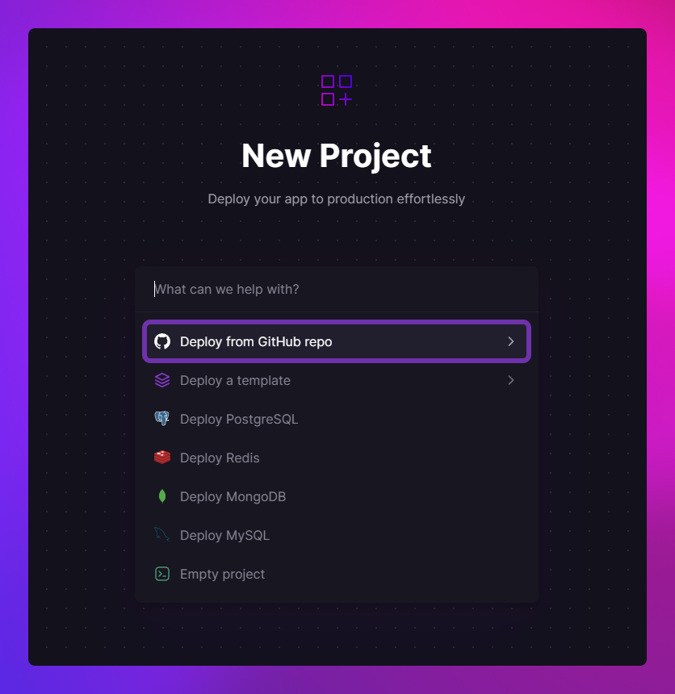
↑ 点 New Project 后弹出菜单，选 "Deploy from GitHub repo"
3
选择后端仓库
选择 Deploy from GitHub repo 后，会显示你的 GitHub 仓库列表
在列表中找到并点击你的后端代码仓库
看不到仓库？：如果列表里没有目标仓库，点击 Configure GitHub App 链接，前往 GitHub 重新授权 Railway 访问你的仓库（和 Cloudflare Pages 的授权操作类似）。
选择仓库后，Railway 会自动开始构建和部署
构建过程可能需要 1-3 分钟，耐心等待
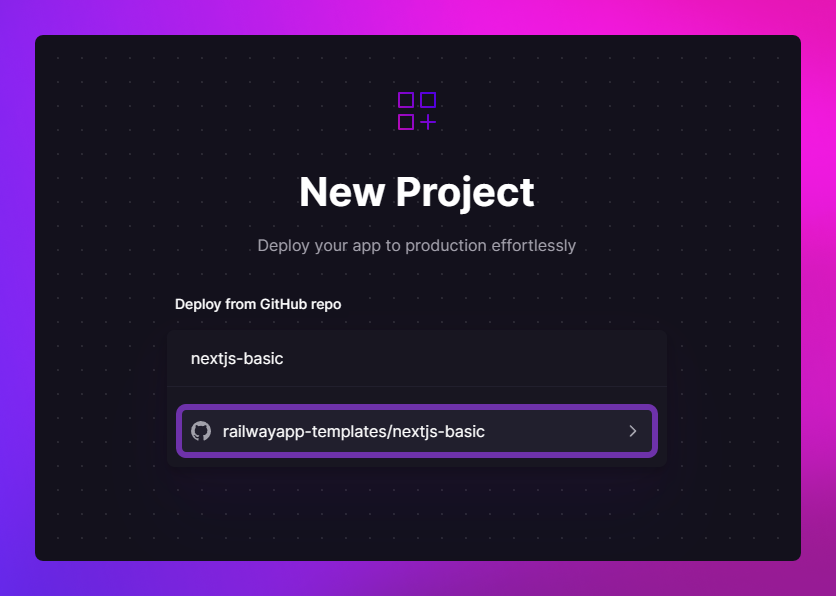
↑ 在列表里找到你的后端仓库，点击它
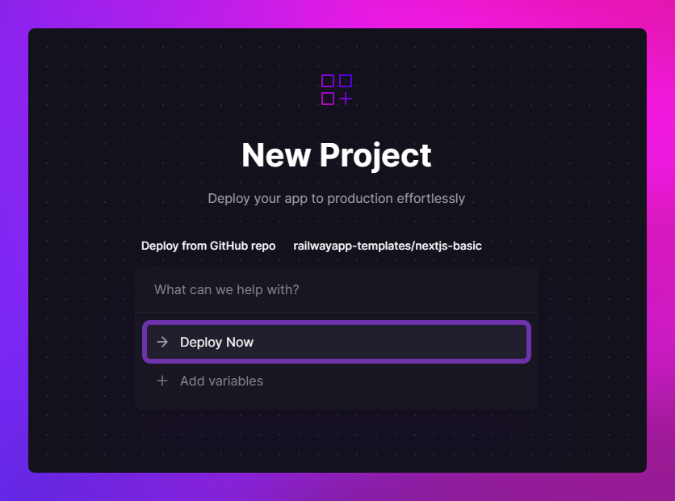
↑ 选好仓库后点 "Deploy Now" 就会开始自动部署
4
配置密钥和参数（让 AI 告诉你填什么）
进入刚创建的项目页面，点击顶部的 Variables 标签
点击 New Variable 按钮，逐个添加参数
不要自己猜要填什么！：把你的后端代码仓库地址发给 AI，AI 会告诉你需要填哪些参数、每个参数填什么值。
发给 AI 的提示词
我的后端代码在这个 GitHub 仓库：【填你的后端仓库地址】
我现在要在 Railway 的 Variables（变量）页面添加配置参数。
请帮我看看：
1. 需要添加哪些参数？
2. 每个参数的值应该填什么？
3. 哪些参数是需要我去申请的（比如 API 密钥）？怎么申请？
请用大白话告诉我，我不懂代码。
如果你的网站用到了 DeepSeek AI：需要去 https://platform.deepseek.com（国内能直接打开，不用开代理）注册登录 → 左侧菜单找 API Keys → 点 创建 API Key → 复制密钥。然后把密钥填到 Railway 的 Variables 里。
5
生成公网访问地址
进入项目页面，点击 Settings 标签
找到 Networking 区域
点击 Generate Domain 按钮
Railway 会自动生成一个公网地址，格式类似：
https://web-production-xxx.up.railway.app ← 这就是你的后端地址
记下这个地址！：后面让 AI 帮你配置中转时会用到。建议复制保存到记事本里，或者直接发给 AI 备用。
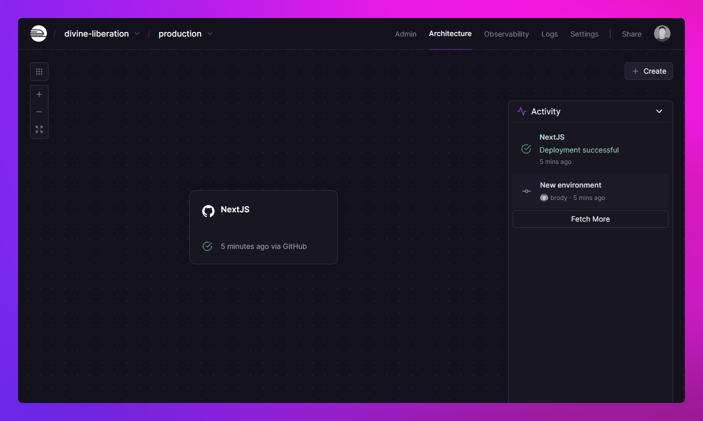
↑ 这就是 Railway 的项目控制台。Settings 标签里可以找到 Networking 和 Generate Domain 按钮。Variables 标签里可以添加参数。Logs 标签可以看运行日志。
6
验证后端是否正常运行
在浏览器中打开后端地址，在后面加上 /health：
https://你的后端地址.up.railway.app/health
如果看到页面显示 {"status":"ok"} 或者类似的文字，说明后端正常运行。
打不开？：国内访问 Railway 需要开代理。验证完成后关代理也没关系，因为下一步我们会用 Cloudflare 做中转，让国内用户不用开代理也能访问。
7
验证失败就找 AI 帮忙
如果验证失败（比如页面显示错误、打不开），进入项目的 Logs 标签查看运行日志
把日志里的报错信息复制发给 AI，让 AI 帮你排查
发给 AI 的提示词
我的后端部署在 Railway 上，但验证时出了问题。
后端地址是：【填你的后端地址】
这是 Railway 的日志报错信息：
【粘贴日志里的报错内容】
请帮我：
1. 判断是什么原因
2. 应该怎么解决
3. 如果需要修改配置，告诉我具体改哪里
六、让国内用户能访问后端（AI 帮你做）
为什么要这一步？：Railway 后端在国内打不开。我们需要在 Cloudflare 项目里加一个"中转"，让用户的请求通过 Cloudflare 转发到 Railway。因为 Cloudflare 国内能直接打开，所以用户不需要开代理。
原理（简单理解）：用户访问你的网站 → Cloudflare 收到请求 → 帮你转发到 Railway 后端 → 后端返回数据 → Cloudflare 再返回给用户。整个过程用户完全感觉不到。
这一章你几乎不需要自己做什么技术操作：大部分工作让 AI 帮你完成。你只需要把信息发给 AI，然后把 AI 给你的文件放到正确位置就行。
操作步骤
1
把信息发给 AI，让 AI 帮你创建中转文件
不要自己写代码！把以下信息发给 AI：
发给 AI 的提示词
请帮我创建 Cloudflare Pages 的中转文件（代理文件）。
- 我的前端 GitHub 仓库是：【填你的前端仓库地址】
- 后端地址是：【填你的 Railway 后端地址】
- 我的网站有搜索功能，搜索接口是 /api/research（用户发搜索词，后端返回结果）
- 还需要一个 /api/health 用来检查后端是否正常
请帮我：
1. 创建需要的中转文件
2. 告诉我每个文件应该放在仓库的哪个文件夹下
3. 如果你是在 TRAE 里操作，请直接帮我创建并推送
我不懂代码，请直接帮我做好。
2
确认文件已经放好
如果你用 AI 编程工具（如 TRAE），AI 会自动帮你创建文件并推送到 GitHub。
如果你没有用 AI 编程工具，可以手动在 GitHub 网页上操作：打开你的仓库页面 → 点 Add file → Create new file → 按照 AI 告诉你的文件名和内容填入。
怎么确认文件放好了？：在你的 GitHub 仓库页面应该能看到一个新的 functions 文件夹，里面有 AI 创建的文件。如果不确定，截图仓库页面发给 AI 确认。
3
等 Cloudflare 自动重建
文件推送到 GitHub 后，Cloudflare 会自动检测到新代码并重新构建网站，通常 2-3 分钟完成。
你可以在 Cloudflare 控制台 Deployments 页面查看构建进度。
怎么查看？：Cloudflare 控制台 → Workers & Pages → 点你的项目 → Deployments 标签。如果显示绿色就说明成功了，红色就是失败了。
4
验证中转是否正常
等 Cloudflare 构建完成后（显示绿色），在浏览器中打开：
https://你的网站地址.pages.dev/api/health
如果看到 {"status":"ok"} 或者类似的文字，说明中转配置成功了！
恭喜！：到这里，你的网站已经完全上线了。用户可以在国内直接访问，不需要开代理。
如果验证失败：不要自己折腾。截图 Cloudflare 构建日志和浏览器报错信息，发给 AI 排查。常见原因：后端地址写错了、文件放错位置了、后端没正常运行。AI 能帮你快速定位。
七、部署后检查事项
网站上线后，不要只看 Cloudflare 显示成功，还需要自己打开网站检查一遍。
检查清单
- 打开正式网站地址，确认页面能正常打开
- 检查首页内容是否显示正常（文字、图片有没有错位）
- 检查按钮、链接、图片是否能正常点击和显示
- 用手机打开网站地址试试（很重要！）
- 如果网站有搜索功能，试试搜索能不能用
- 如果网站有表单，试试能不能提交
最重要的一步：用手机打开网站地址试试！电脑能打开不代表手机也能打开。如果手机打不开或有错位，截图发给 AI 让它帮你调整。
如果网站有问题：不要自己猜原因。描述清楚问题（比如"首页图片不显示""搜索点了没反应"），截图或录屏发给 AI，AI 能帮你判断是哪里出了问题。
八、遇到问题怎么办
万能解决方法：不管遇到什么问题，都是同一套流程——截图或复制报错信息 → 发给 AI → AI 告诉你怎么改 → 改完重新部署。下面是一些常见问题和对应的提示词。
问题 1：在 Cloudflare 找不到 GitHub 仓库
原因：Cloudflare 没有获得你 GitHub 仓库的访问权限。
解决：点击页面底部的 Cloudflare Pages 授权链接，到 GitHub 重新勾选目标仓库授权。
问题 2：部署失败了（显示红色）
原因：可能是配置填错了、代码有问题、或者依赖文件冲突。
解决：不要反复点击重新部署！把构建日志里的红色报错信息复制发给 AI：
发给 AI 的提示词
我的网站在 Cloudflare Pages 部署失败了。
GitHub 仓库是：【填你的仓库地址】
这是报错信息：
【粘贴构建日志里红色的报错内容】
请帮我：
1. 判断是什么原因
2. 应该怎么修改
3. 修改后怎么重新部署
问题 3：部署成功但页面是空白的
原因：通常是配置里的"输出目录"填错了。
解决：把你的 GitHub 仓库地址发给 AI，问 AI "输出目录应该填什么"，然后去 Cloudflare 修改配置重新部署。
问题 4：网站能打开但搜索/功能用不了
原因：后端可能没正常运行，或者中转文件配置有问题。
解决：
- 先确认 Railway 后端是否正常：开代理打开
你的后端地址/health
- 如果后端正常，把浏览器里的报错信息截图发给 AI
发给 AI 的提示词
我的网站能打开，但搜索功能用不了。
网站地址：【填你的网站地址】
后端地址：【填你的后端地址】
这是浏览器里的报错信息：
【截图或描述问题】
请帮我排查原因，告诉我怎么解决。
问题 5：Cloudflare 显示 522 错误
原因：可能是网站还在构建中，或者构建失败了。
解决：去 Cloudflare 控制台 Deployments 页面看看构建状态。如果显示红色（失败），按问题 2 的方法处理。
问题 6：提示有安全漏洞
原因：你的项目用到了某个有安全问题的依赖包。
解决：把提示信息发给 AI，让 AI 帮你升级到安全版本并重新推送。
发给 AI 的提示词
我的网站在 Cloudflare 上提示有安全漏洞：
【粘贴提示信息或截图】
请帮我：
1. 这是什么问题
2. 怎么修复
3. 请直接帮我修好并推送到 GitHub
问题 7：Vercel 在国内打不开
原因：Vercel 在国内被墙了。
解决：改用 Cloudflare Pages 部署。这就是本 SOP 推荐用 Cloudflare 的原因。
遇到问题记住三个"不要"：不要慌、不要反复点击部署、不要自己瞎改配置。先把报错信息发给 AI，AI 帮你判断完再改。
九、给 AI 的提问模板
整个部署过程中，遇到任何不确定的地方，都可以用以下模板问 AI。记住一个原则：信息越详细，AI 回答越准。
模板 A：刚开始部署，不知道怎么填配置
我要把网站部署到 Cloudflare Pages。
GitHub 仓库地址是：【填你的仓库地址】
请你帮我判断：
1. 这个网站是什么类型的？
2. Cloudflare 的"构建命令"填什么？
3. "输出目录"填什么？
4. 需要填"环境变量"吗？填什么？
5. 如果部署失败，我先检查哪里？
请用大白话告诉我，我完全不懂代码。
模板 B：部署/运行报错了
我在部署/使用网站时遇到了问题。
GitHub 仓库：【填你的仓库地址】
网站地址：【填你的网站地址】（如果有的话）
后端地址：【填你的后端地址】（如果有的话）
这是报错信息：
【粘贴报错日志，或描述问题】
请帮我：
1. 判断是什么原因
2. 应该怎么修改
3. 如果需要你帮忙改代码，请直接帮我改好并推送
我不懂代码，请直接帮我解决。
模板 C：网站打开了但功能不正常
我的网站已经部署到 Cloudflare 了，
地址是：【填你的网站地址】
但是遇到以下问题：
【描述问题，比如：搜索功能用不了 / 页面显示不全 / 图片不显示 / 手机上打不开】
后端地址是：【填你的后端地址】
请你帮我排查原因，告诉我应该怎么解决。
如果有截图我发给你看。
模板 D：需要 AI 直接帮你做（不想自己操作）
请帮我完成以下操作，我不懂代码，你直接帮我做好：
【描述你需要做的事，比如：
- 帮我创建中转文件并推送到 GitHub
- 帮我修复安全漏洞
- 帮我升级版本
- 帮我修改配置文件】
我的仓库地址是：【填你的仓库地址】
其他信息：【填 AI 需要知道的信息】
提问小技巧：给 AI 的信息越详细越好——仓库地址、报错日志、截图、你操作到哪一步了、你期望的结果是什么。信息越全，AI 回答越准。
十、后续维护
更新网站内容
如果你修改了网站代码（或让 AI 帮你改了），只需要把新代码推送到 GitHub，Cloudflare 就会自动重新部署。不需要手动操作。
怎么推送？：如果你用 AI 编程工具（如 TRAE），直接告诉 AI "帮我推送到 GitHub"就行。推送后 Cloudflare 通常 2-3 分钟后自动更新。
发给 AI 的提示词
我已经改好了网站代码，请帮我推送到 GitHub。
推送后帮我看看 Cloudflare 有没有自动开始重新构建。
查看网站状态
- Cloudflare：控制台 → Workers & Pages → 点你的项目 → Deployments 看每次部署是否成功（绿色=成功，红色=失败）
- Railway：控制台 → 点你的项目 → Logs 看后端运行日志
查看网站访问数据
Cloudflare 自带免费的数据统计功能：
- 控制台 → 点你的项目 → Analytics 标签
- 可以看到：访问次数、访客数量、流量来源、访问者国家分布等
不知道怎么看？：进了 Cloudflare 控制台找不到数据？截图发给 AI，告诉 AI"我想看网站访问数据"，AI 会指导你点哪里。
网站监控（可选）
推荐用 UptimeRobot（https://uptimerobot.com）免费监控网站是否在线：
- 每 5 分钟自动检查一次你的网站能不能打开
- 网站打不开了立刻发邮件通知你
- 免费版支持 50 个网站监控
建议：上线后第一时间设置监控，这样网站出问题你能第一时间知道，而不是等用户反馈。
回退到旧版本
如果新版本有问题，可以回退到之前能用的版本：
- Cloudflare：Deployments 页面 → 找到之前显示绿色的那次构建 → 点 Promote to production
- Railway：Deployments 页面 → 找到之前的部署 → 点 Redeploy
找不到按钮？：截图 Cloudflare 或 Railway 页面发给 AI，告诉 AI "我想回退到旧版本"，AI 会指导你点哪个按钮。
十一、流程总结
第一步：前端部署（必须）
- 登录 Cloudflare → 找到 Workers & Pages → 点 Create application
- 选 Pages → Get started → 选 Import an existing Git repository
- 连接 GitHub → 选择你的网站仓库
- 填写配置信息（不知道怎么填就问 AI）
- 点 Save and Deploy → 等待构建完成
- 复制
xxx.pages.dev 网站地址
第二步：后端部署（有搜索/登录等功能时需要）
- 登录 Railway → New Project → Deploy from GitHub repo
- 选后端仓库 → 配置参数（问 AI 要填什么）
- Settings → Networking → Generate Domain → 记下后端地址
- 开代理验证后端地址能不能打开
第三步：配置中转（有后端时必须）
- 把前端仓库地址和后端地址发给 AI
- 让 AI 帮你创建中转文件并推送到 GitHub
- 等 Cloudflare 自动重建（2-3 分钟）
- 验证
你的网站/api/health 能不能打开
三个重要地址（记好）
| 名称 | 地址格式 | 用来干什么 |
|---|
| 网站地址 | https://xxx.pages.dev | 分享给用户访问 |
| 后端地址 | https://xxx.up.railway.app | 告诉 AI，让它帮你配置中转 |
| 检查地址 | https://xxx.pages.dev/api/health | 验证网站功能是否正常 |
记住这些原则
- 网站部署选 Pages，不要选 Worker
- 找不到 GitHub 仓库，去检查授权
- 不知道配置怎么填，不要瞎填，问 AI
- 部署成功不等于网站没问题，要自己打开检查
- 对外分享用
xxx.pages.dev 正式地址
- 遇到失败，先复制报错信息问 AI，不要反复点击部署
- 如果 AI 也卡住了，换个 AI 工具试试，或者搜索报错信息
- 你不是一个人在战斗：技术的事交给 AI，你负责点击和判断